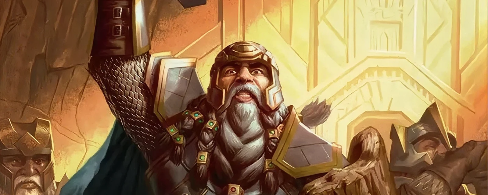
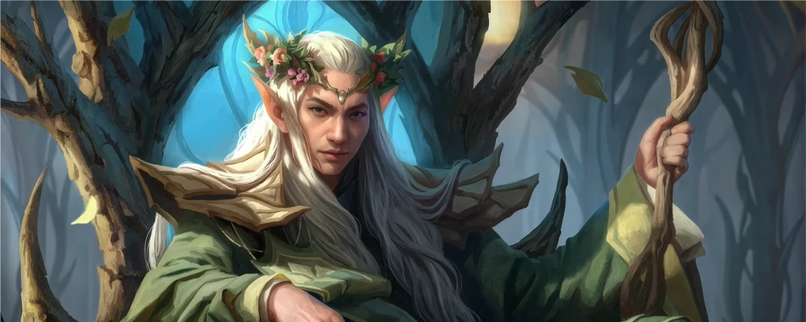
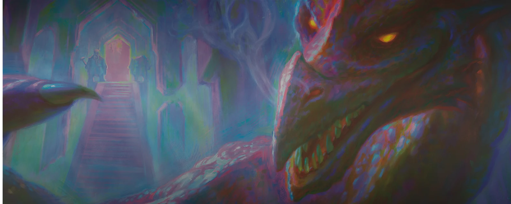

Lo Hobbit
Universe Beyond - Lo Hobbit
Un'avventura indimenticabile tra Nani, Elfi e la magia della Terra di Mezzo ti aspetta. In questa espansione Crossover del 2026, l'universo di Magic: The Gathering incontra il capolavoro fantasy di J.R.R. Tolkien. Le carte di questo set ti permetteranno di rivivere l'epico viaggio di Bilbo Baggins verso la Montagna Solitaria, portando sul tavolo da gioco personaggi iconici, luoghi leggendari e tematiche indissolubilmente legate all'esplorazione e al coraggio.
Varianti Speciali
Per celebrare le radici letterarie dell'espansione, il trattamento speciale Book Cover trasforma le carte più iconiche in classiche copertine di pelle. Il vero tesoro del set è però lo Smaug Dorato: una rarissima variante con foil in rilievo completamente dorato. Trovare questa carta esclusiva, che simula l'immenso tesoro dei Nani, è un'impresa rara quanto recuperare l'Arkengemma, rendendola il pezzo più ambito dell'intera collezione.

Perché sbustare Lo Hobbit?
Questa espansione è imperdibile per tre motivi principali:
- Ambientazione Epica: Ti permette di rivivere in prima persona il viaggio verso la Montagna Solitaria e le atmosfere uniche della Terra di Mezzo.
- Crossover Unico: Unisce perfettamente le meccaniche di Magic con una delle saghe letterarie e cinematografiche più amate di tutti i tempi, rendendola ideale sia per i fan storici che per i nuovi giocatori.
- Nuove Sinergie: Offre carte potenti e affascinanti focalizzate sulle razze iconiche (come Elfi e Nani) e su nuove dinamiche di gioco legate alla storia.

Fazioni e Personaggi Principali
L'espansione "Lo Hobbit" varia enormemente le possibilità di costruzione dei mazzi, permettendo di giocare strategie legate ai protagonisti dell'avventura. Ecco alcuni dei concetti tematici principali:
I Nani di Erebor: Mazzi focalizzati sulla resilienza, la creazione di artefatti (Tesori) e la sinergia tra le creature, guidati dal coraggio della celebre compagnia nanica.

Gli Elfi di Bosco Atro:Strategie basate sull'agilità, l'elusione e il controllo del campo, sfruttando la saggezza secolare e la magia degli Elfi.

Le Forze di Smaug e dell'Oscurità: Mazzi aggressivi o distruttivi che schierano Goblin, Orchi e l'imponente drago per dominare gli avversari attraverso il fuoco e la forza bruta.

Pronto per il viaggio?
L'espansione Lo Hobbit dimostra come l'universo di Magic possa accogliere storie leggendarie, regalando sfide sempre fresche e ricche di strategia. Che tu sia un veterano o un nuovo giocatore pronto a muovere i primi passi in questo crossover, questo set saprà conquistarti. Raduna la tua compagnia, studia le nuove carte e unisciti all'avventura più epica dell'anno!